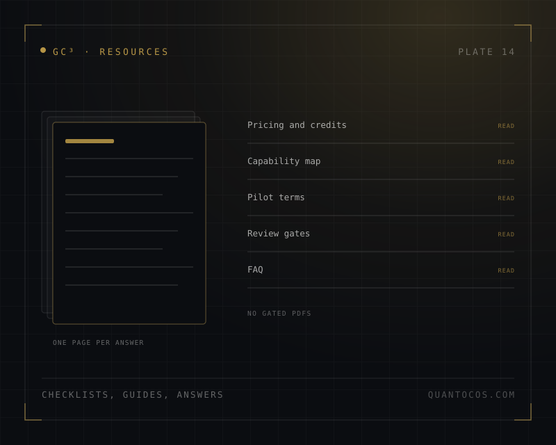

Insights
Notes on how the work actually runs.
These are working notes, not thought-leadership. Each one explains a mechanic of the model in plain language, with the trade-off stated rather than hidden.

GC³ capability subscriptionWhat work costs when it is priced in credits
A credit price is only useful if it makes comparison easier. At $25 per credit, a pod with 120 credits costs $3,000 and a pod with 360 costs $9,000, with no setup fee in either case.
The trade-off is that a credit is not a minute. Two deliverables that look similar can draw different amounts because the work behind them differs, and the estimate at G1 is what makes that visible before production.
What credits do not solve is the value question. A pool can be priced clearly and still be the wrong purchase if the brief is vague, which is why G1 exists before any production starts.
Gates are slower than deadlines, on purpose
A deadline creates pressure to skip the decision points that keep work aligned. The gates are deliberately fixed, because the cost of a rebuild is almost always higher than the cost of a review.
G4 is often misunderstood. It is your review window, not a delivery promise: the pod commits to having work ready for review, and the review itself takes time that the calendar must hold.
The exception is a genuine emergency, and the model handles it by re-scoping at the next gate rather than by removing the gate. That keeps the audit trail intact when the pressure eases.
Why a pod is not a small agency
An agency usually sells you a team and then allocates it across clients. A pod is staffed against your brief for the subscription period, with one manager holding the context between deliverables.
The trade-off is flexibility. A pod is less able to absorb a sudden tenfold increase in volume than an agency that can surge staff, which is why volume is agreed in the brief rather than assumed.
What a pod does better is continuity. The same people see the last draft, the last review comment and the last decision, so the brief does not have to be rebuilt every month.
Measuring creative work without inventing numbers
Creative work can be measured, but only against a definition agreed before it starts. Impressions and clicks measure distribution; whether the work changed a belief needs a different instrument.
The honest approach is to state the measure at G1 and report it as agreed. Anything observed outside that definition is an observation, not a result, and should be labelled that way.
This is why the site does not publish case-study percentages. Without the brief, the baseline and the attribution rules, a percentage is a decoration rather than evidence.
Questions
About these notes.
They are reviewed when the model changes, not on a content calendar.
Will you publish client work here?
Only with written permission, and only with the measure and the context attached. Until then, the notes stay general.
Can I quote these notes?
Yes, with attribution to Quantocos Global Systems LLP and a link to this page.
Next step
Disagree with a note? Say so.
A good objection is more useful than a compliment. We will answer it in writing, and correct the note if it is wrong.
Quantocos Global Systems LLP · GC³ · services under a written engagement letter